- Home
- Equipment & service
- Fischer Panda
Quiet power for every vessel.
Compact, light and highly efficient generators and electric drive systems from the German manufacturer Fischer Panda.
Marine diesel generators
Fischer Panda marine generators are an excellent choice for professional sailing and motor yachts. They are compact, light, quiet and very efficient. Silent operation is one of the most important features while under way, and the compact dimensions make it easy to place the generator in the vessel. Fischer Panda generators are fitted with FPA320 (Fischer Panda), Kubota, Hatz, Yanmar, Mercedes Benz, Deutz, Mitsubishi and JCB diesel engines.
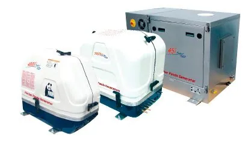
Fischer Panda i-series 5–15 kVA (inverter generators)
The Fischer Panda i-series is the latest generation of compact, super-quiet and powerful generators, saving up to 30% in weight and space! They are ideal for yacht owners who need low noise and vibration. They feature modern, innovative and environmentally friendly inverter technology. Engine speed adjusts to the required output, while thanks to the inverter the output voltage and frequency remain unchanged. Unlike constant-speed generators, where fuel consumption and exhaust emissions are always equally high, variable-speed generators significantly reduce consumption. Maximum engine speed is 2800 rpm.
- Variable speed — depending on the load
- Small and light
- High efficiency — maximum power
- 230 V AC output — a reliable power source
- Pure sine output
- High starting power for heavy consumers — air conditioning, diving equipment (compressors)
- Simple installation — reduced costs
- Environmentally friendly — low fuel consumption
- Optional SAE J1939 interface
The ultimate solution for even greater comfort and safety
As an option, Fischer Panda offers a special inverter prepared for parallel operation. This makes it possible to connect different i-series generators in parallel without additional cables. Each generator works completely independently and can be controlled individually.
- Different i-series generators can easily be connected in parallel — even with different outputs (using a parallel converter, available as an option)
- Load sharing: in parallel operation both generators are equally loaded
- Ideal for vessels that benefit from several smaller generators for better weight distribution (catamarans, trimarans)
i-series inverter generators (PMS)
| Generator | Power kW | Voltage | Engine | Housing |
|---|---|---|---|---|
| Panda 5000i.Neo PMS | 4,0/5,0 | 230 AC / 50 Hz | Fischer Panda GmbH FPE320 | GFK · 3D |
| Panda 5000i PMS | 4,0/5,0 | 230 AC / 50 Hz | Kubota EA300 | GFK · 3D |
| Panda 8000i PMS | 6,4/8,0 | 230 AC / 50 Hz | Kubota Z482 | GFK · 3D |
| Panda 10000i PMS | 8,0/10,0 | 230 AC / 50 Hz | Kubota Z602 | GFK · 3D |
| Panda 15000i-230V PMS | 12,0/15,0 | 230 AC / 50 Hz | Kubota D902 | GFK · 3D |
| Panda 15000i-400V PMS | 12,0/15,0 | 400 AC / 50 Hz | Kubota D902 | GFK · 3D |
| Panda 19i-230V PMS | 18,8/15,0 | 230 AC / 50 Hz | Kubota D902 | GFK · 3D |
| Panda 25i-230V PMS | 20,0/25,0 | 230 AC / 50 Hz | Kubota V1505-E3 | GFK · 3D |
| Panda 25i PMS | 20,0/25,0 | 230 AC / 60 Hz | Kubota V1505 | MPL · 4DS |
| Panda 25i-400V PMS | 20,0/25,0 | 400 AC / 50 Hz | Kubota V1505-E3 | GFK · 3D |
| Panda 45i PMS | 36,0/45,0 | 400 AC / 50 Hz | Kubota V2403T | MPL · 3D |
| Panda 60i PMS | 48,0/60,0 | 400 AC / 50 Hz | Hatz 4H50TIC | MPL · 4DS |
Asynchronous generators with speed regulation — 50 Hz / 3000 rpm (PMS)
| Generator | Power kW | Voltage | Engine | Housing |
|---|---|---|---|---|
| AGT-DC 4000-12V PMS | 3,20 | 12 DC / 400 Hz | Kubota EA300 | GFK · 3D |
| AGT-DC 4000-24V PMS | 3,20 | 24 DC / 400 Hz | Kubota EA300 | GFK · 3D |
| AGT-DC 5000-12V PMS | 4,00 | 12 DC / 400 Hz | Kubota Z482 | GFK · 3D |
| AGT-DC 6000-24V PMS | 4,80 | 24 DC / 400 Hz | Kubota Z482 | GFK · 3D |
| AGT-DC 8000-24V PMS | 6,40 | 24 DC / 400 Hz | Kubota D722 | GFK · 3D |
| AGT-DC 10000-48V PMS | 9,10 | 48 DC / 400 Hz | Kubota D722 | GFK · 3D |
| AGT-DC 11000-48V PMS | 10,90 | 48 DC / 400 Hz | Kubota D902 | GFK · 3D |
| AGT-DC 13000-48V PMS | 12,50 | 48 DC / 400 Hz | Kubota D1105 | GFK · 3D |
| AGT-DC 15000 PMS | 15,60 | 48 DC / 400 Hz | Kubota D1305 | GFK · 3D |
| AGT-DC 18000 PMS | 17,90 | 48 DC / 400 Hz | Kubota V1505 | GFK · 3D |
| AGT-DC 22000 PMS | 21,90 | 48 DC / 400 Hz | Kubota V1505T | MPL · 4DS |
| AGT-DC 25000 PMS | 24,00 | 48 DC / 400 Hz | Kubota V2403 | MPL · 4DS |
Direct generators
Ideal where generators run in short intervals to charge the battery bank and sustain operation during increased consumption.
| Generator | Power kW | Voltage | Engine | Housing |
|---|---|---|---|---|
| Panda 7,5-4 PMS | 6,5/7,6 | 230 AC / 50 Hz | Kubota D1105 | GFK · 3D |
| Panda 9-4 PMS | 8,0/9,4 | 230 AC / 50 Hz | Kubota D1105 | GFK · 3D |
| Panda 12-4 PMS | 10,5/12,3 | 230 AC / 50 Hz | Kubota V1505 | GFK · 3D |
| Panda 22-4 PMS | 18,6/21,9 | 230 AC / 50 Hz | Kubota V2403 | MPL · 4DS |
| Panda 30-4 PMS | 25,5/30,0 | 400 AC / 50 Hz | Mitsubishi MI S4S | MPL · 4DS |
| Panda 40-4 PMS | 35,0/41,2 | 400 AC / 50 Hz | Mitsubishi MI S4S DT | MPL · 4DS |
| Panda 50-4 PMS | 40,0/47,0 | 400 AC / 50 Hz | JCB NA-47 | MPL · 4DS |
| Panda 60-4 PMS | 50,0/59,0 | 400 AC / 50 Hz | Deutz BF4M2012C | MPL · 6DS |
| Panda 70-4 PMS | 61,0/72,0 | 400 AC / 50 Hz | Deutz BF4M2012C | MPL · 6DS |
| Panda 85-4 PMS | 73,0/86,0 | 400 AC / 50 Hz | Deutz BF4M1013EC | MPL · 6DS |
| Panda 110-4 PMS | 92,0/109,0 | 400 AC / 50 Hz | Deutz BF6M1013EC | MPL · 6DS |
| Panda 130-4 PMS | 110,0/130,0 | 400 AC / 50 Hz | Deutz BF6M1013EC | MPL · 6DS |
| Panda 200-4 PMS | 170,0/200,0 | 400 AC / 50 Hz | Deutz BF6M1015E | MPL · 6DS |
Alternating generators — 50 Hz / 1500 rpm (PMS-HD)
Robust marine generators housed in an insulated pod for super-quiet operation.
| Generator | Power kW | Voltage | Engine | Housing |
|---|---|---|---|---|
| Panda 7,5-4 PMS | 6,5/7,6 | 230 AC / 50 Hz | Kubota D1105 | GFK · 3D |
| Panda 9-4 PMS | 8,0/9,4 | 230 AC / 50 Hz | Kubota D1105 | GFK · 3D |
| Panda 12-4 PMS | 10,5/12,3 | 230 AC / 50 Hz | Kubota V1505 | GFK · 3D |
| Panda 22-4 PMS | 18,6/21,9 | 230 AC / 50 Hz | Kubota V2403 | MPL · 4DS |
| Panda 30-4 PMS | 25,5/30,0 | 400 AC / 50 Hz | Mitsubishi MI S4S | MPL · 4DS |
| Panda 40-4 PMS | 35,0/41,2 | 400 AC / 50 Hz | Mitsubishi MI S4S DT | MPL · 4DS |
| Panda 50-4 PMS | 40,0/47,0 | 400 AC / 50 Hz | JCB NA-47 | MPL · 4DS |
| Panda 60-4 PMS | 50,0/59,0 | 400 AC / 50 Hz | Deutz BF4M2012C | MPL · 6DS |
| Panda 70-4 PMS | 61,0/72,0 | 400 AC / 50 Hz | Deutz BF4M2012C | MPL · 6DS |
| Panda 85-4 PMS | 73,0/86,0 | 400 AC / 50 Hz | Deutz BF4M1013EC | MPL · 6DS |
| Panda 110-4 PMS | 92,0/109,0 | 400 AC / 50 Hz | Deutz BF6M1013EC | MPL · 6DS |
| Panda 130-4 PMS | 110,0/130,0 | 400 AC / 50 Hz | Deutz BF6M1013EC | MPL · 6DS |
| Panda 200-4 PMS | 170,0/200,0 | 400 AC / 50 Hz | Deutz BF6M1015E | MPL · 6DS |
Electric propulsion
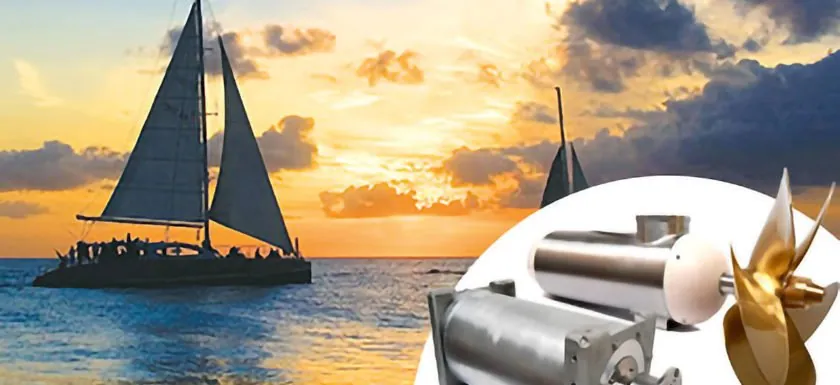
The new Fischer Panda electric drive systems are designed for boat owners who want to cruise peacefully.
Fischer Panda has succeeded in bringing the advantages of diesel-electric propulsion from large ships to smaller vessels. In the Whisperprop propulsion system, the highly efficient eMotion diesel generator produces power for one or more drives, air conditioning, additional consumers on board and battery charging.
Fischer Panda electric drives use modern, dynamic permanent-magnet motors. They deliver greater thrust and significantly improve manoeuvrability.
Fischer Panda hybrid systems allow the engine to run and the batteries to charge at the same time. Depending on the required power, the systems are available at 48 V.
- Very quiet
- Better thrust across the whole speed range
- Improved manoeuvrability
- One generator can power several drives
- Optimal performance using advanced generator technology
- Multiple control stations are possible
- Regeneration possible (on request)
The new Whisperprop drive is designed for owners who want to experience electric sailing. The boat can be powered by batteries alone, by a parallel drive, or by a generator-driven (hybrid) system.
Three types of system
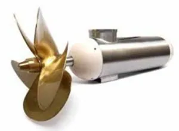
POD motor3,8 – 100 kW
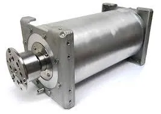
Shaft motor3,8 – 100 kW
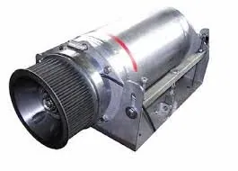
Parallel drive3,8 – 100 kW
Electric drive by vessel type
Sailboats and motor boats with one propulsion drive
Electric motor as the primary drive.
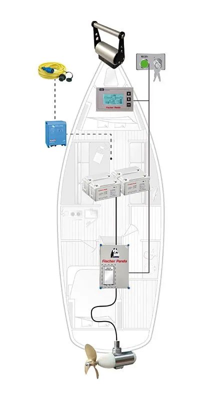
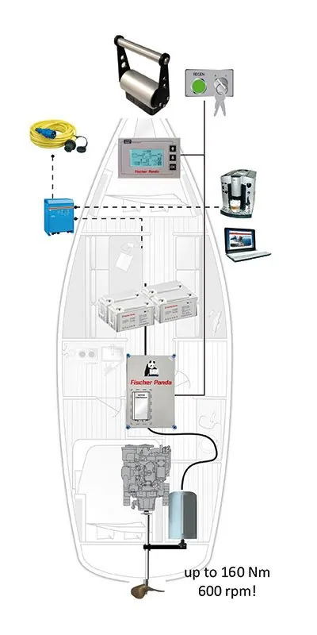
Motor vessels with two propulsion drives and catamarans
Electric motor as the primary drive, or a hybrid system.
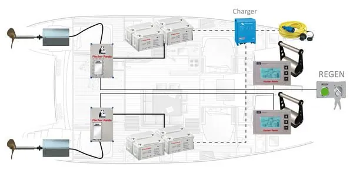
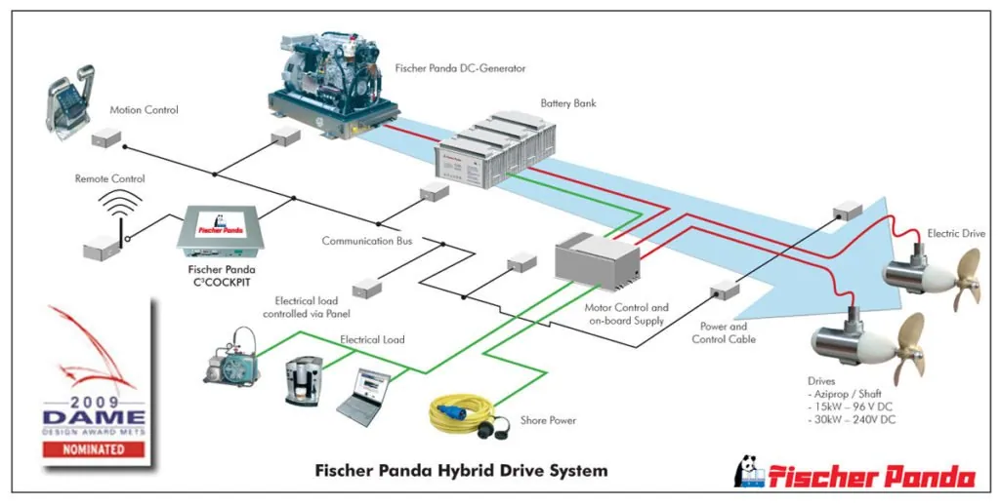
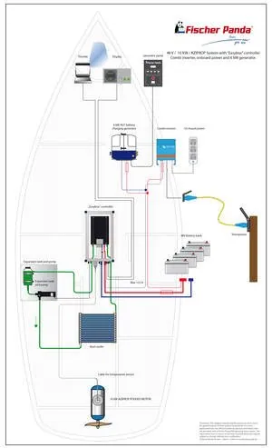
Military programme
This is the area where quiet operation, compact dimensions and high efficiency are needed most. Fischer Panda produces special generators for a wide range of military applications.
- Command and control units
- Communications
- Tactical headquarters
- Mobile generators installed on towing vehicles for various purposes
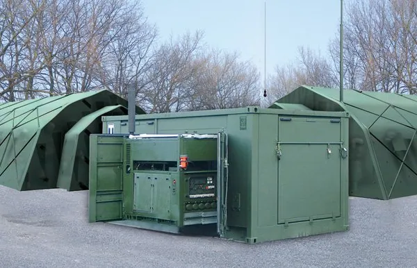
Fischer Panda military generators are EMC-standardised to MIL-STD 461E and, thanks to effective insulation, are difficult to detect with infrared devices. They are housed in special super-quiet sound enclosures, so the Panda diesel APU runs at a very low noise level. For more detailed information about the military range, send an inquiry to info@indelmarine.hr.
- The perfect pure sine wave required by the most sophisticated electronics
- Water-cooled stator windings for maximum efficiency
- Specially designed housing insulation
- No hot, humid, dirty air inside the case
- Low noise level: 58 dBA at 7 metres(*)
- Weight and size savings
- No brushes or rotating diodes
- Water-cooled engine and generator
- Lifetime rotor warranty, no replacement parts
- EMC licence to MIL-STD 461E
- Shock & vibration approval to MIL-STD 810
- Metal soundproof capsule
- Asynchronous design
- Protection against environmental influences
- Reliability
- Design flexibility
Air-cooled DC generators
- 28 V / 2 kW – 4,5 kW
Water-cooled DC generators
- 28 V / 4 kW – 10 kW
Water-cooled AC generators 50 / 60 Hz
- 4 kW – 55 kW
- 230 V / 50 Hz jednofazni · single-phase
- 120 / 240 V 60 Hz jednofazni · single-phase
- 230 V / 400 V 50 Hz trofazni · three-phase
- 120 V / 208 V 60 Hz trofazni · three-phase
- 240 V / 416 V 60 Hz trofazni · three-phase
Water-cooled AC generators 400 Hz
- 120 V / 208 V / 400 Hz
- 240 V / 416 V / 400 Hz
Combined generator / air-con (Combi)
- 6 / 10 / 12 V
- 10 kW + 22.000 BTU klima · air-con
- 28 V DC + klima · air-con
Fischer Panda CAPS
- Air conditioning and a 25 kW generator with ECU as one complete system
Diesel generators for vehicles
Compact Fischer Panda diesel generators for motorhomes, special-purpose and work vehicles. Contact us for an offer tailored to your vehicle and consumption.
Send an inquiryFischer Panda spare parts
Delivered from the central FISCHER PANDA ADRIA d.o.o. warehouse — available within 24 hours.
- Service kits
- Generator mounts
- Impellers
- Filters
- Belts
- Exhaust gas separators
- Exhaust pot
- Generator engine parts: Fischer Panda (FPA), Kubota (KU), Farymann (FA), Mitsubishi (MI)
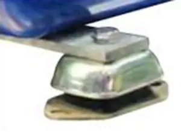
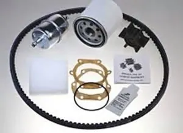
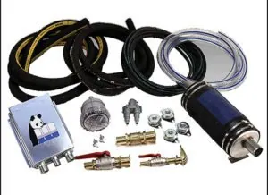
Frequently asked questions
What fuel drives Fischer Panda generators?
FP generators run on diesel fuel.
What is the average consumption of a generator?
Average consumption is around 0.18 l per kW of electricity produced per hour.
What is the smallest Fischer Panda marine generator?
The smallest Fischer Panda generator is the 4 kW unit.
How noisy are Fischer Panda generators?
Fischer Panda generators sit in a closed case and have a noise level of 51–62 dB, which makes them among the quietest generators on the market.
What is the most powerful Fischer Panda generator?
The most powerful Fischer Panda generator is the 200 kW unit. For higher outputs, two generators can be connected in parallel.
What is the difference between classic and inverter generators?
Unlike classic generators, which run at 3000 rpm and keep voltage and frequency stable with a VCS (voltage control system) and capacitors, inverter generators regulate output voltage and frequency through AC-AC inverters. This lets the generator run at variable speed (2200–2800 rpm) depending on the load, which ultimately means lower fuel consumption and a longer generator life.
Where can I buy a Fischer Panda generator?
Fischer Panda generators can be bought at authorised sales points in any major city or marina. For more information, contact prodaja@fischerpanda.hr.
How available are FP service and spare parts?
Spare parts are delivered from the central FISCHER PANDA ADRIA d.o.o. warehouse and are available within 24 hours. A network of authorised service centres covers the whole Adriatic coast. For more information, contact prodaja@fischerpanda.hr.
What is the difference between the basic and premium installation kits?
The basic installation kit includes a through-hull fitting with valves, a seawater filter, seawater inlet hoses, exhaust and seawater hoses, fuel hoses and a set of clamps. The premium kit additionally includes a dry gas separator, a seawater outlet hose and an additional through-hull valve.
What is the exhaust gas separator for?
The exhaust gas separator separates exhaust gases from seawater to reduce noise while the generator runs.
What is the warranty on Fischer Panda generators?
The warranty on Fischer Panda generators is 24 months.
What about my warranty if I sail outside Croatia?
The Fischer Panda warranty is valid worldwide. Simply request service or a warranty repair from the list of distributors for your area, which is included in the instructions.
Do you install generators, or do I have to arrange it myself?
Installation is organised through our service network in Croatia, Slovenia, Bosnia and Herzegovina, Serbia and Montenegro.
What does “hybrid” Fischer Panda mean?
The “hybrid” Fischer Panda combines an electric drive motor with a diesel generator. The electric motor draws on the battery bank and the (DC) generator charges it. If the generator output is optimally matched to the motor, continuous operation at maximum power is possible.
What are the components of the Fischer Panda electric system?
The main components are: 1. electric motor with drive (shaft, POD or parallel drive); 2. EasyBox (motor controller, fuses, cooling power supply, etc.); 3. battery assembly (up to 20 kW: 48 V DC system; > 20 kW – 100 kW: 360/400 V DC); 4. control unit with display (monitoring, adjustment and control of all functions); 5. throttle control (single or double, depending on the number of drive motors); 6. option: battery charger; 7. option: generator for charging the batteries.
What are the basic components needed for the system?
Components 1–6 (if the system runs on batteries).
What types of motors does Fischer Panda offer?
Shaft motors (for direct mounting or on an existing propeller shaft) and POD motors (“Aziprops”) installed under the hull, either fixed or rotating.
Which motor versions does Fischer Panda offer?
Currently (May 2018): 3.8 kW to 20 kW (48 V DC safety extra-low voltage); > 20 kW to 100 kW (100 V / 360 V / 400 V DC high voltage); special motors (e.g. for submarines and special vessels).
What is the difference between a serial and a parallel hybrid?
In a serial hybrid drive, the diesel generator directly supplies the electric motor, which is the vessel’s main drive. In a parallel hybrid drive, the electric motor is connected in parallel to the main engine’s drive shaft, so it “works” as a generator while the boat runs on its diesel engine. With the diesel engine off, the vessel can be driven by the electric motor alone. Since diesel and electric outputs usually differ greatly, choosing the right reduction gear and clutch matters. Please contact us — we will be happy to help.
Does Fischer Panda offer HDS (“Hybrid Drive System”) as a parallel hybrid?
Yes, our motors can also be installed in parallel on the main drive. Fischer Panda will be happy to help if you want to install a parallel hybrid drive.
What about the guarantee on electric systems?
1 year for commercial use, 2 years for private use.
What are the advantages of the Fischer Panda system over the competition?
Fischer Panda offers a complete system that includes the generator, so you have a single contact for service and installation who helps with any question. Fischer Panda has 35 years of experience building generators and more than 20 years building electric drive systems. The latest drives are the fourth generation of Fischer Panda electric drives and stand out for their advanced technology.
Can I test a boat with this system?
Yes — on the local lake in Paderborn, aboard a boat with a 10 kW propulsion system, on request. In Berlin you can test-drive a 37-foot motor yacht with a Fischer Panda drive. Please make an appointment if you are interested.
Can we order batteries, chargers and propellers through Fischer Panda?
Yes, on request we supply the complete package, including batteries, chargers and propellers. Fischer Panda makes a custom propeller for each boat and application.
How do I calculate the ideal electric drive for my vessel?
1 kW per tonne of displacement is enough for inland (still) water. For rivers or the open sea, 2.5 kW per tonne of displacement should be installed.
What can I reuse from my existing system (shaft)?
The drive shaft, and it is possible to use the existing propeller.
Can I use my existing Fischer Panda AC generator for a hybrid drive?
Not really. You can keep using the alternator for the on-board supply (230 V / 400 V), and your 230 V alternator can also power the chargers that charge the drive battery.
Can we use a generator smaller than the system’s rated output?
Yes, that is possible. However, it reduces the continuous output, and the energy difference between the system and the generator is taken from the batteries.
Can I keep using a saildrive?
You can, but the saildrive installation should be suitably reinforced where possible. With rapid load changes, the electric motor’s high torque can damage a saildrive that is not built to be stable. Saildrives are also quite loud, so silent electric cruising is not possible. Fischer Panda therefore does not recommend combining a saildrive with its motors.
Where can I place the generator, batteries and electrical devices on board?
Placement follows the regulations and the manufacturer’s drawings of the vessel. Cable lengths and cross-sections must be designed in advance by Fischer Panda.
Can we use two generators of different output?
Yes, almost any combination is possible.
Do I need two battery banks if I have two drives?
No, one battery bank is enough for two drives.
How much fuel does a diesel generator use?
0.3 l / kW / h.
How does Fischer Panda define electrical power, e.g. “10 kW”?
Mechanical output = shaft power, i.e. the output actually available to the drive system.
Is there a weight advantage over a propulsion engine?
No — the weight saved by the light electric drive is mostly offset by the weight of the batteries required.
Why does a stronger electric drive need a higher voltage?
High discharge currents shorten battery life, so the maximum discharge of our systems must not exceed about 250 A (400 A for 20 kW systems). More powerful drives (> 20 kW … 80 kW) therefore run between 96 V and 360 V DC, and 100 kW requires 400 V DC.
Can we do without a battery bank and sail with just a generator?
Technically yes, but we strongly advise against it. The battery is needed as a buffer that keeps peak propeller loads away from the generator. As a mechanical system, the generator cannot react fast enough; without a battery you may get voltage dips or spikes that make the system shut down automatically.
Which type of battery does Fischer Panda recommend?
Lithium batteries that need no active cooling (SUPER-B lithium iron phosphate LiFePO4 batteries). Among lead-acid batteries, AGM batteries are very suitable.
I have service batteries on board — can I keep using them?
We recommend not using them with the electric drive, since the drive bank should contain batteries of the same type and age. You can of course keep using your existing service and engine batteries for the on-board supply.
How do I choose the optimal propeller for a Fischer Panda electric boat?
Fischer Panda works with engineers who specialise in propellers. The optimal propeller is designed from all the data on the vessel and drive.
Must commissioning be done by an authorised Fischer Panda person?
Yes — commissioning must be done by an authorised Fischer Panda person to obtain the warranty.
Can I install the electrical system myself?
The system should be installed by specialised electricians or an authorised Fischer Panda technician. Improper installation can cause faults and safety issues. Fischer Panda can help with detailed instructions or, if necessary, a technician. A high-voltage system MUST be installed by a trained electrician or a specialist company.
What maintenance does a hybrid drive need?
The system needs little maintenance. You can do simple diesel maintenance yourself: oil and oil-filter changes, checking and replacing the fuel filter, V-belt and pump rotor as needed. The required work is listed in the manual.
Where can I buy spare parts for the system?
From an authorised Fischer Panda dealer — including us.

Get in touch
We will gladly help you and find the best solution for you — whether you are buying, chartering, servicing or learning.
Send an inquiry